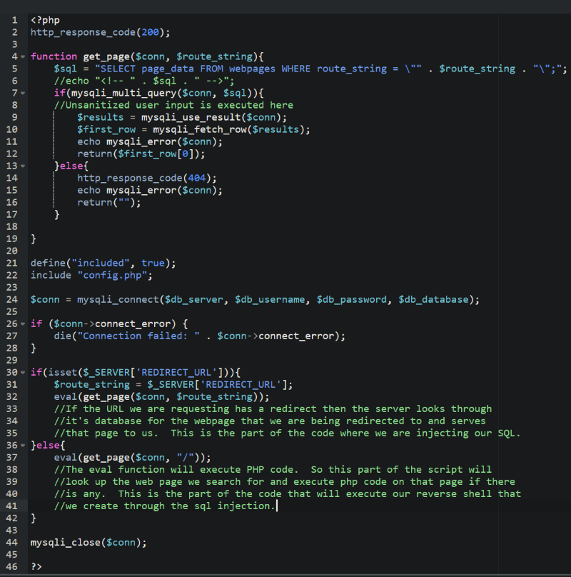

Return to Main Page
Cobweb Walkthrough
Summary
Port Scanning
Running a port scan against the full port range to determine which ones are open.
# Nmap 7.91 scan initiated Fri Sep 17 09:55:05 2021 as: nmap -p- -oN ping_tcp 192.168.248.162
Nmap scan report for 192.168.248.162
Host is up (0.038s latency).
Not shown: 65530 filtered ports
PORT STATE SERVICE
21/tcp open ftp
22/tcp open ssh
80/tcp open http
3306/tcp open mysql
9090/tcp closed zeus-admin
# Nmap done at Fri Sep 17 09:58:03 2021 -- 1 IP address (1 host up) scanned in 178.00 seconds
Running an nmap scan using the flags -sV and -sC to enumerate service versions and other information.
# Nmap 7.91 scan initiated Fri Sep 17 09:59:05 2021 as: nmap -p21,22,80,3306 -sV -sC -oN script_tcp 192.168.248.162
Nmap scan report for 192.168.248.162
Host is up (0.042s latency).
PORT STATE SERVICE VERSION
21/tcp open ftp vsftpd 3.0.3
| ftp-anon: Anonymous FTP login allowed (FTP code 230)
|_Can't get directory listing: ERROR
| ftp-syst:
| STAT:
| FTP server status:
| Connected to ::ffff:192.168.49.248
| Logged in as ftp
| TYPE: ASCII
| No session bandwidth limit
| Session timeout in seconds is 300
| Control connection is plain text
| Data connections will be plain text
| At session startup, client count was 3
| vsFTPd 3.0.3 - secure, fast, stable
|_End of status
22/tcp open ssh OpenSSH 8.0 (protocol 2.0)
| ssh-hostkey:
| 3072 15:5f:9b:80:bc:c4:02:ff:24:71:0a:6f:4e:2e:84:35 (RSA)
| 256 0f:cb:6b:3d:31:e6:4c:0b:76:db:6e:7d:46:c2:d0:43 (ECDSA)
|_ 256 18:47:98:78:55:37:98:52:33:0a:96:1f:06:66:a2:bc (ED25519)
80/tcp open http Apache httpd 2.4.37 ((centos))
| http-auth:
| HTTP/1.1 401 Unauthorized\x0D
|_ Server returned status 401 but no WWW-Authenticate header.
|_http-server-header: Apache/2.4.37 (centos)
|_http-title: Login
3306/tcp open mysql?
| fingerprint-strings:
| NULL, RPCCheck, SIPOptions, X11Probe, giop, oracle-tns:
|_ Host '192.168.49.248' is not allowed to connect to this MariaDB server
1 service unrecognized despite returning data. If you know the service/version, please submit the following fingerprint at https://nmap.org/cgi-bin/submit.cgi?new-service :
SF-Port3306-TCP:V=7.91%I=7%D=9/17%Time=61449F30%P=x86_64-pc-linux-gnu%r(NU
SF:LL,4D,"I\0\0\x01\xffj\x04Host\x20'192\.168\.49\.248'\x20is\x20not\x20al
SF:lowed\x20to\x20connect\x20to\x20this\x20MariaDB\x20server")%r(RPCCheck,
SF:4D,"I\0\0\x01\xffj\x04Host\x20'192\.168\.49\.248'\x20is\x20not\x20allow
SF:ed\x20to\x20connect\x20to\x20this\x20MariaDB\x20server")%r(X11Probe,4D,
SF:"I\0\0\x01\xffj\x04Host\x20'192\.168\.49\.248'\x20is\x20not\x20allowed\
SF:x20to\x20connect\x20to\x20this\x20MariaDB\x20server")%r(SIPOptions,4D,"
SF:I\0\0\x01\xffj\x04Host\x20'192\.168\.49\.248'\x20is\x20not\x20allowed\x
SF:20to\x20connect\x20to\x20this\x20MariaDB\x20server")%r(oracle-tns,4D,"I
SF:\0\0\x01\xffj\x04Host\x20'192\.168\.49\.248'\x20is\x20not\x20allowed\x2
SF:0to\x20connect\x20to\x20this\x20MariaDB\x20server")%r(giop,4D,"I\0\0\x0
SF:1\xffj\x04Host\x20'192\.168\.49\.248'\x20is\x20not\x20allowed\x20to\x20
SF:connect\x20to\x20this\x20MariaDB\x20server");
Service Info: OS: Unix
Service detection performed. Please report any incorrect results at https://nmap.org/submit/ .
# Nmap done at Fri Sep 17 09:59:20 2021 -- 1 IP address (1 host up) scanned in 15.37 seconds
Port 21
Downloading files from the ftp server.
┌──(kali㉿kali)-[~/…/ProvingGrounds/Cobweb/exfiltrated/ftp]
└─$ ftp 192.168.248.162
Connected to 192.168.248.162.
220 (vsFTPd 3.0.3)
Name (192.168.248.162:kali): anonymous
530 Please login with USER and PASS.
530 Please login with USER and PASS.
SSL not available
331 Please specify the password.
Password:
230 Login successful.
Remote system type is UNIX.
Using binary mode to transfer files.
ftp> ls
200 PORT command successful. Consider using PASV.
150 Here comes the directory listing.
drwxr-xr-x 2 0 0 54 Aug 27 14:20 pub
226 Directory send OK.
ftp> cd pub
250 Directory successfully changed.
ftp> ls
200 PORT command successful. Consider using PASV.
150 Here comes the directory listing.
-rw-r--r-- 1 501 20 955 Aug 27 13:25 access.log
-rw-r--r-- 1 501 20 530 Aug 27 13:28 auth.log
-rw-r--r-- 1 501 20 176 Aug 27 13:30 syslog
226 Directory send OK.
ftp> mget *
mget access.log? y
200 PORT command successful. Consider using PASV.
150 Opening BINARY mode data connection for access.log (955 bytes).
226 Transfer complete.
955 bytes received in 0.00 secs (672.8840 kB/s)
mget auth.log? y
200 PORT command successful. Consider using PASV.
150 Opening BINARY mode data connection for auth.log (530 bytes).
226 Transfer complete.
530 bytes received in 0.00 secs (696.6058 kB/s)
mget syslog? y
200 PORT command successful. Consider using PASV.
150 Opening BINARY mode data connection for syslog (176 bytes).
226 Transfer complete.
176 bytes received in 0.00 secs (212.9802 kB/s)
ftp> exit
221 Goodbye.
Inside the file access.log we find an interesting line
- 192.168.118.5 - - [27/Aug/2021:08:47:04 -0400] "GET /.index.php.swp HTTP/1.1" 200 5422 "-" "Mozilla/5.0 (X11; Linux x86_64; rv:78.0) Gecko/20100101 Firefox/78.0"
Port 80
When we visit http://192.168.248.162/.index.php.swp we see some php code involving interaction with the SQL database. I used curl to download the contents of this page.
┌──(kali㉿kali)-[~/Documents/ProvingGrounds/Cobweb/exfiltrated]
└─$ curl http://192.168.248.162/.index.php.swp -o index.php.swp 6 ⨯
% Total % Received % Xferd Average Speed Time Time Time Current
Dload Upload Total Spent Left Speed
100 917 100 917 0 0 10188 0 --:--:-- --:--:-- --:--:-- 10188
I pasted this code into a php beautifier that I found on google to make it easier to read.
